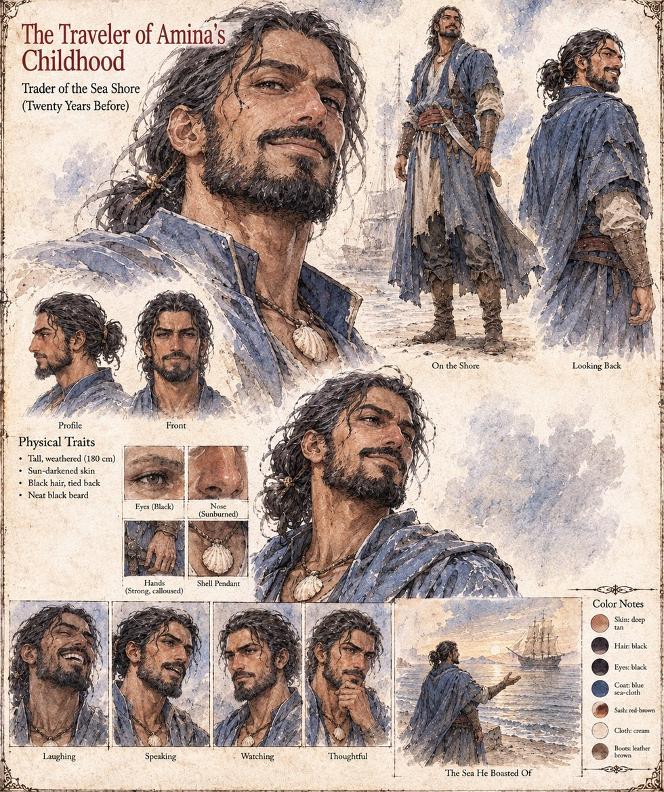

The Traveler of Amina's Childhood
Trader of the sea shore, twenty years before · unnamed · whose boasts gave Amina the sea · tall and weathered by the sheet
The traveler of Amina's childhood, a trader who once stood on the sea shore and whose boasts, heard as a child, give her the shape of her longing. She brings to her marriage, with a cedar chest and her mother's recipe for bread, an unconfessed hunger for the sea that she has only heard of in his boasts, and when she quietly prices a berth on a coastal caravan, asking Ibrahim ibn Nasr the cost to the last coin, the sea she is pricing is the one he described. The manuscript places him on the shore twenty years before the story. The character list gives him a role and no name.
The sheet is titled The Traveler of Amina's Childhood and subtitled Trader of the Sea Shore (Twenty Years Before). It draws him tall and weathered, with sun-darkened skin, black eyes, black hair tied back, a neat black beard, a sunburned nose and strong, calloused hands, in a blue sea-cloth coat over cream cloth with a red-brown sash and brown leather boots, a curved blade at his belt and a shell pendant on a cord. Its expression panels run laughing, speaking, watching and thoughtful, its full views are captioned On the Shore and Looking Back, and its last scene, The Sea He Boasted Of, shows him on the shore with a tall ship at sunset. The sheet gives him no age, the manuscript gives none either, and everything visual is the sheet's.